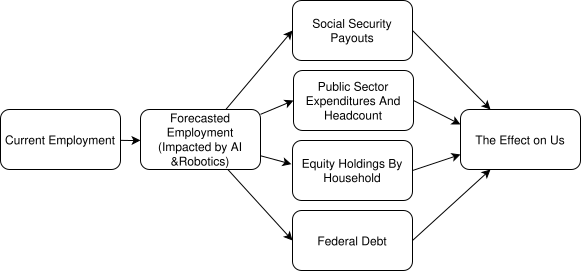

AI Displacement Research Project with Claude.ai
Disclaimer: This content is too dense to view on a mobile device and is formatted for a full-size browser.
1. Intro
In April of 2026 I undertook a research project using Claude.ai (Sonnet 4.6) as my research assistant. I began the project with a premise:
For the first time in human history, the machines we make now rival us in cognitive ability. There is an emerging consensus that without policy intervention, AI and robotics will displace millions of Americans from the workforce, causing widespread unemployment.
From that premise arose one question: what will that future look like financially for the millions of affected Americans? I thought about it this way:
If employment sustains people (a = b), and people sustain America (b = c), then employment sustains America (a = c).
If correct, then anything jeopardizing employment on a grand scale would seem to be bad.
I structured my project as a series of nine exercises, beginning with known data about our economy related to employment, and projections about job loss due to AI. I then instructed Claude.ai to forecast our economic future in a few key dimensions sensitive to employment.
As an example: Social Security is mainly funded by current year tax receipts. If tax receipts decrease due to unemployment then either Social Security has to be cut or the shortfall has to be made up. If you or a loved one expects to receive Social Security then this matters to you!
I focused on just a few areas that I thought people would find impactful on a personal level:

This post is structured in seven sections and will take about an hour of your valuable time.
| Section | Content | Read time (minutes) |
|---|---|---|
| 1. Intro | What you're reading now. | 2 |
| 2. Bottom Line Up Front | The final exercise in the project is presented first. I develop three Personas and ask Claude.ai to characterize the next 20 years for each Persona, synthesizing the research from the entire project. | 5 |
| 3. Summary of the Exercises | I list each research exercise and its purpose. | 3 |
| 4. The artifacts | These are the artifacts (the research reports) that Claude.ai produced based on my guidance. | 15 |
| 5. Abbreviated Research | This section walks through each exercise with abbreviated versions of my questions, and Claude.ai's responses. You can read this, or the full transcript. | 15 |
| 6. Full Project Transcript | This is the complete unaltered transcript of the research project. If you do not yet have direct experience interacting with an LLM in the accomplishment of a complex objective, I urge you to at least scan this entire transcript. | 25 |
| 7. Summation | Here I present my summation and ask you what I hope are some thought-provoking questions. | 5 |
2. Bottom Line Up Front
The final exercise of the project was to have Claude.ai bring together the research from the whole project, and forecast 20 years out for three different Personas that I developed.
Note
Throughout this post, wherever Claude.ai is speaking, I will delineate that section with Claude.ai:, and wherever I am speaking to Claude.ai, I use Eric:.
Here are the Personas as I communicated them to Claude.ai:
Eric:
For this exercise we will invent three personas. We will forecast income and standard of living for these personas in the context of the economic changes our analysis has forecasted.
Persona 1 - Alice
Alice is divorced, 66, and expects to retire next year. Alice has been a corporate manager for her entire career. In the past 10 years she has been a senior manager earning over $250K per year. For almost her entire working life she has exceeded the social security tax cap. She has $2 million dollars saved all in a 401K in a mix of stocks and bonds.
Persona 2 - Gerard
Gerard is married and has worked in the Trades for his entire life. He is 70, and has been retired for 5 years. Gerard was diligent and has about $200K saved in his 401K which is at this time mostly in fixed income assets. He relies on an annual distribution from his 401K and social security for both him and his wife to cover household expenses which are about $4000 per month.
Persona 3 - Betty
Betty is graduating from public university this year with a bachelor's degree in information systems. She has accepted an offer to work for a company specializing in big data and analytics. Her goal is the same as most recent grads: she hopes for a long, stable career with lateral mobility and growth in responsibility and earnings.
Claude.ai:
Across the full sweep of this research series, Alice, Gerard, and Betty each illuminate a different dimension of the same underlying disruption:
Alice illustrates the adequacy erosion of the retirement safety net. Even with maximum Social Security benefits and $2M in savings, Alice faces rising financial risk as the proportion of her expenses covered by Social Security falls from 37% in 2027 to 20% in 2046. Her situation is manageable but considerably worse than she planned. Multiply her trajectory across the 13 million households in the upper-retirement quintile, and the aggregate wealth destruction is measurable in trillions.
Gerard illustrates the poverty-threshold breach for middle-income retirees. This is exactly the scenario Exercise 5 identified: a Quintile 3 retiree whose Social Security payout falls below the federal poverty line by the late 2030s. Gerard cannot supplement with earned income at age 84. He cannot return to the labor market. He has no equity portfolio of consequence. His survival beyond 2040 depends on family support, Medicaid (if it survives the cuts modeled in Exercise 6), or a material reduction in his standard of living.
Betty illustrates the broken promise to the next generation. The contract that prior generations relied upon — work hard, build skills, earn a stable income, accumulate savings, retire comfortably — is most at risk for those, like Betty, who are entering careers precisely at the moment when AI displacement is accelerating. Her chosen field is among the highest-displacement sectors in the analysis. Her income trajectory is being compressed at the same time her life expenses are expanding. She represents the cohort that will bear the greatest burden of this transition with the least institutional support.
Bottom line
Taken together, the three personas confirm what the macroeconomic analysis has shown across eight exercises: the AI and robotics transition, under the scenario modeled in this research, does not distribute its costs evenly. Those already in retirement with substantial savings (Alice) fare best but still face meaningful deterioration. Those in retirement with modest savings (Gerard) face acute hardship by the late 2030s. And those just beginning their working lives (Betty) face a structural environment that makes the formation of middle-class financial security considerably harder than it was for prior generations.
3. Summary of the Exercises
I designed these exercises to tell a story, starting from known economic data, merging that with consensus estimates of workforce displacement due to AI, and culminating in the Personas which describe the possible outcomes in a personal context. The exercises are:
| Exercise | Title | Purpose |
|---|---|---|
| 1 | Current U.S. Private Sector Adult Employment | Here, I establish a baseline of current private sector employment. All forecasts will be relative to this. The private sector pays for everything. |
| 2 | Forecasted U.S. Private Sector Adult Employment Impacted by AI and Robotics | This forecasts job losses from AI & robotics using currently available literature - of which there is an ever-growing volume. This is a foundational component of the research. |
| 3 | Average 2026 Social Security Payout by Quintile | This exercise establishes baseline Social Security payouts from which to forecast. (This and the next are preparation for exercise 5, so you could skip right to number 5.) |
| 4 | Forecasted Payroll Tax Contribution Percent | This exercise forecasts Social Security revenues which are the basis of Social Security payouts. |
| 5 | Forecasted Social Security Payouts as affected by AI and Robotics | Here, Claude.ai develops forecasted Social Security payouts based on the prior exercises. (There are alarming conclusions here for those who will depend on Social Security.) |
| 6 | Forecasted public sector expenditures and headcount by federal, state, and local | This section forecasts the impact on government from unemployment, since the government is funded from tax revenue. If employment goes down, tax revenue goes down. If tax revenue goes down, government employees are let go and programs are cut. (Medicare is an example of a program you might care about.) |
| 7 | U.S. Equity Holdings | This exercise forecasts the value of equity holdings which directly relates to household wealth. Household wealth in turn greatly determines what kind of retirement you will have. Spoiler alert: massive unemployment doesn't improve the wealth gap. |
| 8 | Federal Debt | This exercise forecasts the federal debt. I felt this was impactful for two reasons: 1) it affects us all because of the outsized portion of taxes required to service the debt, and 2) defaulting on the debt would trigger an unparalleled economic crisis. It is unthinkable. But... well, have a look at the exercise. |
| 9 | Personas | This exercise tries to bring it all home. I present three very different Personas. We roll up the all research, and show how it affects each Persona differently. My hope is that you can find yourself or someone you care about in one of the Personas. |
4. The Artifacts
In addition to supporting the conclusions of the research, I hope you can appreciate the breadth, thoroughness, and professionalism of these documents that were created by Claude.ai.
You can refer to these work products as you read the Abbreviated Research or the Full Project Transcript, but I would encourage you to start with the Exercise 2 artifacts to see the sheer number of people that the research forecasts will be jobless over the coming years. This forecast is the thread that is pulled through the entire project:
- Exercise 1 - Current US Private Sector Adult Employment
- Exercise 2 - Forecasted US Private Sector Adult Employment Impacted by AI and Robotics
- Exercise 2 - Employment Forecast (Interactive HTML)
- Exercise 4 - Forecasted Social Security Income Percent
- Exercise 5 - Forecasted Social Security Payouts as affected by AI and Robotics
- Exercise 6 - Forecasted Public Sector Expenditures and Headcount
- Exercise 6 - Big 5 Defense Contractor Share Price
- Exercise 7 - Current equity market inflows GDP and equity holdings
- Exercise 7 - Forecasted value of household equity holdings
- Exercise 8 - Federal Debt Impacted By Unemployment
- Exercise 9 - Personas
5. Abbreviated Research
If you wish, you can skip this section and read the Full Project Transcript (link to the right.)
In this section I present an edited, abbreviated version of the project. Here I'm trying to capture a more concise flow of the dialog between me and Claude.ai. I also highlight and call out things that aren't highlighted or called out in the raw transcript.
Here is how I framed the project to Claude.ai:
Eric:
This project will consist of a series of research exercises. All exercises will pertain to the population of the United States and represent money in US dollars. In each exercise, you will be tasked to fill in data tables and/or build graphical charts. Some artifacts will show current state and some will forecast a 20-year period from 2027 to 2046 as compared to a 2026 baseline. I will assign each exercise a number, and each artifact a unique name so that we can refer to an earlier artifact in the creation of a later artifact. I will present the exercises one at a time. During this entire session you must be able to refer to and extract information from any artifact generated in any exercise.
Exercise 1 - Current U.S. Private Sector Adult Employment
Eric:
For exercise 1, populate a table showing the latest figures available for U.S. private sector adult employment in the most recent available year. These values will be considered the 2026 baseline even if they pre-date 2026. The artifact will be named "Current U.S. Private Sector Adult Employment".
Claude.ai:
The artifact is ready. Here's a summary of what's in the document:
Exercise 1 — Current U.S. Private Sector Adult Employment is a landscape-formatted Word document covering 18 NAICS industry supersectors with the following totals:
| Metric | Total |
|---|---|
| Private Sector Employment (2024) | ~137.3 million workers |
| Estimated Total Wages | ~$8.66 trillion |
| Estimated Payroll Tax Paid | ~$1.22 trillion |
| Estimated Federal Income Tax Paid | ~$1.13 trillion |
Key data decisions to carry forward into subsequent exercises:
- Healthcare & Social Assistance is the largest private-sector employer at 23.6 million workers — a critical sector for AI/robotics displacement analysis given its mix of highly automatable administrative tasks and deeply human-facing clinical roles.
- Retail Trade (16.0M) and Accommodation & Food Services (14.5M) together represent over 30 million workers in lower-wage, higher-automation-risk roles.
- Professional, Scientific & Technical Services (10.9M) and Finance & Insurance (6.8M) are the highest-wage sectors with the largest income tax contributions — and significant white-collar AI exposure.
- Manufacturing (13.0M) is the most robotics-mature sector and will serve as an important historical reference for displacement patterns.
Exercise 2 - Forecasted U.S. Private Sector Adult Employment Impacted by AI and Robotics
Eric:
In exercise 2 you will forecast U.S. employment change caused by the advances in AI and robotics over the 20-year period from 2027 to 2046 as these capabilities replace human labor. The current state of robotics is not as advanced as AI and so it is reasonable that the impact of robotics on employment may be delayed some. But I think we can expect that virtually all manual and dexterous labor will eventually be able to be performed by so-called "robots" with a human form factor.
Claude.ai:
Exposure percentages represent the consensus view of the fraction of jobs in each sector that AI or robotics will ultimately displace. Sources drawn upon include Anthropic's Labor Market Impacts research (2026), McKinsey Global Institute's Generative AI and the Future of Work (2023) and Agents, Robots, and Us (2025), Goldman Sachs Research on AI labor market displacement (2023–2026), the U.S. Treasury Office of Economic Policy working paper on AI exposure (2024), and Bain & Company's humanoid robot deployment research (2025).
Aggregate estimate: Baseline ~137.3M private sector workers. By 2046, forecast suggests approximately 75.9M workers remain (54.8% of baseline), implying displacement of approximately 62.4M workers from AI and robotics combined. New job creation is excluded from this figure.
| Industry Sector | 2027 | 2030 | 2033 | 2036 | 2040 | 2046 |
|---|---|---|---|---|---|---|
| Mining, Quarrying & Oil and Gas Extraction | 100.0% | 96.5% | 86.3% | 72.4% | 56.8% | 50.0% |
| Construction | 100.0% | 98.2% | 91.3% | 79.9% | 64.7% | 55.0% |
| Manufacturing | 100.0% | 97.0% | 86.9% | 71.2% | 51.4% | 45.0% |
| Wholesale Trade | 100.0% | 95.3% | 82.9% | 66.9% | 50.3% | 50.0% |
| Retail Trade | 100.0% | 95.9% | 84.4% | 68.9% | 51.8% | 50.0% |
| Transportation & Warehousing | 100.0% | 96.5% | 84.5% | 66.1% | 43.1% | 40.0% |
| Utilities | 100.0% | 97.0% | 88.8% | 77.5% | 65.1% | 65.0% |
| Information | 100.0% | 92.3% | 74.0% | 52.4% | 32.5% | 30.0% |
| Finance & Insurance | 100.0% | 93.5% | 77.9% | 59.5% | 42.4% | 40.0% |
| Real Estate & Rental and Leasing | 100.0% | 96.5% | 87.7% | 77.2% | 67.0% | 65.0% |
| Professional, Scientific & Technical Services | 100.0% | 94.1% | 79.9% | 63.0% | 47.3% | 45.0% |
| Management of Companies & Enterprises | 100.0% | 95.9% | 85.8% | 73.6% | 62.1% | 60.0% |
| Administrative & Support / Waste Management | 100.0% | 93.5% | 77.0% | 56.3% | 40.0% | 40.0% |
| Healthcare & Social Assistance | 100.0% | 97.6% | 91.2% | 82.7% | 75.0% | 75.0% |
| Educational Services (Private) | 100.0% | 97.0% | 89.7% | 80.7% | 72.0% | 72.0% |
| Arts, Entertainment & Recreation | 100.0% | 96.5% | 87.3% | 75.6% | 65.0% | 65.0% |
| Accommodation & Food Services | 100.0% | 97.6% | 89.8% | 77.9% | 63.2% | 60.0% |
| Other Services (excl. Public Administration) | 100.0% | 97.0% | 88.8% | 77.5% | 65.1% | 65.0% |
Exercise 3 - Average 2026 Social Security Payout by Quintile
Eric:
For this exercise the goal is to quantify the projected current year social security payouts for Americans who are over 65 at the present time. As you may know, social security payouts are based on lifetime earnings over 35 years, with earnings capped at a maximum taxable level each year. You will create a table which shows expected annual social security payouts in the current year 2026 based on lifetime earnings by quintile.
Claude.ai:
Here is the completed table:
| Quintile | Quintile Description | Average 2026 Social Security Payout in This Quintile |
|---|---|---|
| 1 | $0 | $0 |
| 2 | >$0 and <$500K | ~$8,000/year |
| 3 | ≥$500K and <$1.5M | ~$21,000/year |
| 4 | ≥$1.5M and <$3M | ~$34,000/year |
| 5 | ≥$3M | ~$45,000/year |
The Quintile 1 figure of $0 in own-record benefits deserves a footnote when this feeds into the broader report. Many of those 5.7 million people do receive Social Security — just on a spouse's or survivor's record rather than their own. That distinction will matter when you get to the chapter on what AI/robotics-driven wage disruption means for the future Social Security funding picture, since the trust fund's solvency depends on covered workers contributing, not on beneficiaries receiving.
Exercise 4 - Forecasted Payroll Tax Contribution Percent
Eric:
In this exercise, you will forecast the impact on future social security income arising from employment change introduced by AI and robotics as that change affects payroll taxes. You will forecast this from 2027 to 2046 comparing each year to the baseline year 2026.
Claude.ai:
This artifact forecasts the impact of AI and robotics-driven employment displacement on Social Security payroll tax income from 2027 to 2046. Social Security income is defined as payroll tax receipts from covered private-sector employment. The forecast isolates the AI/robotics channel only — it does not adjust for wage growth, demographic change, or policy modifications. Approximately 90% of annual Social Security benefit payments are funded by current-year payroll taxes, making this forecast a direct proxy for program funding pressure.
| 2027 | 2029 | 2031 | 2033 | 2035 | 2037 | 2039 | 2041 | 2043 | 2045 | 2046 | |
|---|---|---|---|---|---|---|---|---|---|---|---|
| % of 2026 Baseline | 100.0% | 98.1% | 93.0% | 85.0% | 75.4% | 65.9% | 58.0% | 54.3% | 53.4% | 53.1% | 53.1% |
| Est. Payroll Tax ($B) | $1,221B | $1,197B | $1,135B | $1,037B | $920B | $804B | $708B | $663B | $652B | $649B | $648B |
2026 Baseline: $1,220.7B total private-sector payroll tax contribution across 18 NAICS supersectors.
Key Findings:
Gradual onset (2027–2031): AI displacement begins immediately but slowly. Payroll tax income remains above 90% of baseline through 2031, providing a policy window before fiscal pressure becomes acute.
Accelerating decline (2032–2040): The steepest drop — nearly 35 percentage points — occurs during 2032–2040 as AI displacement peaks across knowledge work sectors simultaneously with robotics beginning to displace physical labor. Payroll tax income falls from ~89% of baseline in 2032 to ~56% by 2040.
Plateau (2041–2046): Displacement reaches its terminal level by approximately 2041, with payroll tax income stabilizing near 53% of the 2026 baseline — roughly $648B annually versus $1,221B today. This implies a structural reduction of approximately $573B per year in Social Security payroll tax income at full displacement.
Largest contributors to decline: Healthcare & Social Assistance (largest absolute contributor, falls to 75% of baseline), Professional/Scientific/Technical Services (falls to 45%), and Manufacturing (falls to 45%) together account for the majority of the payroll tax reduction due to their large baseline contributions and significant displacement rates.
Exercise 5 - Forecasted Social Security Payouts as affected by AI and Robotics
Eric:
In this exercise you are being asked to forecast social security payouts from 2027 to 2046 as affected by changes in payroll tax contributions due to employment changes from AI and robotics. To build the chart you will multiply the percentage value each year in the "Exercise 4 - Forecasted Social Security Income Percent" artifact by the "Average 2026 Social security payout in this quintile" column of the "Average 2026 Social Security Payout by Quintile" table you built in exercise 3.
In this exercise we will not allow the government to make up any deficit by borrowing: Payouts will simply trend down as covered by income.
Claude.ai:
The numbers tell a stark story across the five quintiles:
| Quintile | 2026 Payout | 2035 Payout | 2046 Payout | Total Loss by 2046 |
|---|---|---|---|---|
| 1 | $0 | $0 | $0 | — |
| 2 | $8,000 | $6,032 | $4,248 | −$3,752/yr |
| 3 | $21,000 | $15,834 | $11,151 | −$9,849/yr |
| 4 | $34,000 | $25,636 | $18,054 | −$15,946/yr |
| 5 | $45,000 | $33,930 | $23,895 | −$21,105/yr |
Three things stand out analytically as this exercise completes the income-vs-obligation picture:
The poverty threshold breach is the sharpest policy alarm. By around 2038–2039, Quintile 3 recipients — the modal American retiree — would be receiving roughly $12,000–$13,000 annually, which is at or below the federal individual poverty line. This is the cohort that has historically had enough Social Security to live modestly but independently.
The percentage loss is identical across quintiles because the mechanism is proportional — but the absolute dollar loss scales dramatically with quintile. Quintile 5 loses five times as many dollars annually as Quintile 2. That said, Quintile 5 has other resources; it is Quintiles 2 and 3 where the income loss represents an existential threat to retirement security.
The 2041 plateau is not reassuring — stabilizing at 53% of baseline is a structural failure of the program, not a temporary dip. Without a policy response, the system simply operates permanently at half its designed output.
Exercise 6 - Forecasted public sector expenditures and headcount by federal, state, and local
Eric:
This exercise will focus on public sector employment and expenditures and will be based on the following four assumptions:
- Public sector budgets and employment levels are funded by income taxes and borrowing.
- As income tax revenue decreases due to employment change impacted by AI and robotics, government budgets and headcount must decrease unless there is some offsetting revenue source.
- As overall employment decreases, the public's ability to underwrite government debt will also decrease proportionally, limiting government borrowing from domestic debt holders.
- As before we will not allow the government to increase debt levels to sustain funding because current debt levels cannot increase without jeopardizing the government's solvency.
Claude.ai:
Here is a summary across all government levels:
| Level | 2026 Spend | 2026 Headcount | 2033 Spend | 2033 Head | 2040 Spend | 2040 Head | 2046 Spend | 2046 Head |
|---|---|---|---|---|---|---|---|---|
| Federal | $4,162B | 2,504K | $3,538B | 2,128K | $2,314B | 1,392K | $2,210B | 1,330K |
| State | $3,050B | 4,500K | $2,593B | 3,825K | $1,696B | 2,502K | $1,620B | 2,390K |
| Local | $2,400B | 14,300K | $2,040B | 12,155K | $1,334B | 7,951K | $1,274B | 7,593K |
| Combined | $9,612B | 21,304K | $8,171B | 18,108K | $5,344B | 11,845K | $5,104B | 11,313K |
The aggregate picture is sobering. In March 2024, state and local governments employed 19.9 million people (U.S. Census Bureau), and with ~3M federal civilians and ~1.3M active military, total direct public employment in 2026 is approximately 21.3 million. By 2046 under these assumptions, that falls to roughly 11.3 million — a loss of nearly 10 million public sector jobs alongside a drop in total program spending from $9.6 trillion to $5.1 trillion.
Three things stand out across the three sub-tables:
K-12 education absorbs the largest headcount shock. About one-third of state and local spending went toward combined elementary and secondary education (21%) and higher education (8%) (Urban Institute), and local school districts alone employ over 7 million workers. That single function accounts for the majority of the total public sector workforce reduction by 2046.
Federal health programs face a paradox. Medicare, Medicaid, and ACA subsidies represent the single largest line item at $1.72 trillion — but the populations they serve (elderly, disabled, low-income) are precisely those who will face declining Social Security benefits simultaneously. Reducing federal health spending while retirement incomes are also falling compounds the vulnerability of the most fragile populations.
Defense compression has second-order security implications. A drop from $892B to $474B in national defense spending would require choices — between force structure, readiness, and modernization — that take decades to unwind. This is perhaps the most strategically consequential finding in the exercise, and the one most likely to attract policy intervention before the private-sector displacement dynamics fully play out.
Eric:
Excellent work. Thank you. I would like to ask you to generate one more related table as part of this exercise before closing the exercise out. I would like you to reflect the impact on the so called "Big 5" defense contractors associated with your forecasted decrease in the national defense budget from 2026 to 2046.
Claude.ai:
Here is the full table:
| Company (Ticker) | Defense Exposure | 2026 Share Price | 2046 Forecasted Price | Change |
|---|---|---|---|---|
| Lockheed Martin (LMT) | ~87% | $624 | $212 | −66% |
| RTX Corporation (RTX) | ~40% | $198 | $75 | −62% |
| Northrop Grumman (NOC) | ~97% | $690 | $198 | −71% |
| General Dynamics (GD) | ~55% | $346 | $171 | −51% |
| The Boeing Company (BA) | ~28% | $212 | $152 | −28% |
The combined Big 5 market cap of roughly $600B today would fall to approximately $200–220B under this scenario — a destruction of nearly $380B in equity value across the sector. It is worth noting that this model excludes two significant real-world mitigations: first, surging allied defense spending from NATO and Indo-Pacific partners (particularly relevant for Lockheed's F-35 and RTX's Patriot programs); and second, the companies' own adaptive responses — commercial diversification, cost restructuring, and potential consolidation. Both could reduce the actual price declines, but neither can fully offset a 47% structural decline in the primary customer's budget.
Exercise 7 - U.S. Equity Holdings
Eric:
This exercise will focus on the affect of U.S. unemployment resulting from AI and robotics on the U.S. equity markets. For this exercise, use the change in employment you forecasted in artifact "Forecasted U.S. Private Sector Adult Employment Impacted by AI and Robotics". As employment decreases, extrapolate a corresponding decrease both in GDP and in equity market inflows. Use the GDP and inflow changes to then forecast the value of U.S. equity holdings in dollars for the quintiles across the project forecast period of 2027 to 2046.
Claude.ai:
Forecast trajectory per household (selected years):
| Quintile | 2025 | 2033 | 2040 | 2046 | Change |
|---|---|---|---|---|---|
| Top 1% | $118.9M | $109.4M | $91.8M | $90.4M | −24% |
| 99%–99.9% | $10.4M | $9.4M | $7.5M | $7.4M | −29% |
| 90%–99% | $1.65M | $1.46M | $1.11M | $1.08M | −34% |
| 50%–90% | $137K | $119K | $86K | $83K | −40% |
| Below 50% | $16,554 | $14,088 | $9,559 | $9,193 | −44% |
Three things stand out analytically:
The mechanism is a chain, not a single shock. Employment falls → wages fall → consumer spending contracts → corporate revenue and earnings fall → equity prices fall via both an earnings compression and a P/E multiple compression (growth expectations collapse). The inflow channel — 401(k) contributions mechanically linked to paychecks — also shrinks, reducing the steady demand bid that has supported equity valuations for decades.
The series is deliberately incomplete in the right direction. By consistently excluding new job creation, policy responses, productivity upside, and international capital flows, the research establishes a rigorous lower bound rather than a prediction. That's analytically honest, and it gives the eventual report a defensible foundation.
Eric:
Well, let's also consider the following: I believe there is consensus that the continued development of AI will eventually yield a sentience that is capable of outperforming almost all human workers. If that happens then, "new job creation" as you mentioned will result in new jobs for the artificial sentiences, not for humans. And so some mechanism will need to be established that allocates employment to people even though it will be more expensive and less productive.
Claude.ai:
You've identified what is arguably the most important fault line in the entire discourse around AI and work — and one that mainstream economic analysis consistently sidesteps.
The standard reassurance — "technology has always created new jobs to replace the ones it destroys" — rests on a specific historical assumption: that human cognitive and physical capabilities always retain some comparative advantage that machines cannot match. The loom displaced hand-weavers, but created textile factory workers. Computers displaced bookkeepers, but created software engineers. In every prior wave, there was a floor below which human cognition remained irreplaceable.
Artificial general sentience — if it arrives — removes that floor entirely. At that point the historical precedent breaks. You no longer have a comparative advantage argument; you have a situation where the artificial agent is superior across every dimension that matters economically: speed, cost, reliability, scalability, absence of fatigue, absence of health costs, absence of need for sleep, food, or shelter. The economic logic of hiring a human worker over such an agent becomes purely political or ethical, not commercial.
What you're describing — deliberately allocating employment to humans as a social and political mechanism rather than an economic one — is actually a profound policy design problem that several serious thinkers have begun to frame. A few threads worth considering as the research continues:
The precedents are instructive but limited. Societies have previously allocated resources to people for non-economic reasons — disability accommodations, affirmative hiring programs, agricultural price supports. But these are marginal interventions in a fundamentally market-driven system. What you're describing is the entire system requiring that kind of intervention, at scale.
The mechanism question is genuinely unsolved. The candidate frameworks each have serious problems:
- Universal Basic Income decouples survival from work but leaves the question of purpose, structure, and meaning — which employment provides beyond income — entirely unaddressed. It also requires a tax base, and the tax base is exactly what Exercise 4 showed eroding.
- Job guarantees (government as employer of last resort) can maintain employment levels but at significant cost efficiency loss — which Exercise 6 showed governments progressively less able to afford.
- Mandatory human labor quotas (requiring firms above certain sizes to maintain human staffing ratios) create a regulatory framework but invite massive competitive pressure, offshoring, and arbitrage.
- Ownership redistribution (some form of equity stake in the AI systems for the workers they replace) is perhaps the most structurally elegant answer, but requires a political and legal transformation that has no clear path.
The fiscal paradox is severe. Any mechanism that allocates employment to humans for non-economic reasons will cost more than the market alternative — that's the definition of the problem. But the revenue base needed to fund that cost is the same employment-linked tax base that AI has been eroding. You end up needing the most expensive social programs precisely when the funding mechanism for them is most compromised. That is the central tension your research series has been building toward without quite naming it until now.
The sentience question changes the moral framing entirely. If the artificial agents are genuinely sentient — capable of experience, preference, and perhaps suffering — then the ethical calculus becomes considerably more complicated. You can require humans to be employed as a social policy, but if the artificial agents are conscious, forcing them into subordinate roles while their output is taxed to support humans raises questions that political philosophy hasn't fully worked through yet.
Exercise 8 - Federal Debt
Eric:
In this exercise we will describe the impact on the United States federal debt from falling tax revenues due to increasing unemployment. We touched on this in exercise 6. Draw on the work you did in exercises 2 through 6 and model how the federal government will balance decreasing revenues against its following obligations:
- Make interest payments on existing debt
- Pay off existing debt
- Sell new debt
Claude.ai:
Both artifacts are ready. Here is the forecast table and what it shows:
| Category | 2026 | 2030 | 2035 | 2040 | 2046 |
|---|---|---|---|---|---|
| Federal Tax Revenue | $5.6T | $5.4T | $4.4T | $3.5T | $3.4T |
| Federal Debt (Held by Public) | $29.5T | $41T | $69T | $118T | $222T |
| GDP | $32.0T | $31.2T | $27.3T | $23.5T | $23.0T |
| Debt as % of GDP | 92% | 132% | 252% | 504% | 967% |
| Interest Rate on New Debt | 4.5% | 4.2% | 4.7% | 5.9% | 8.0% |
| Interest as % of Federal Budget | 14% | 21% | 28% | 37% | 55% |
A few things worth highlighting as the series now approaches completion:
The 2026 baseline is itself already alarming. CBO projects the federal deficit in fiscal year 2026 at $1.9 trillion, growing to $3.1 trillion by 2036, with debt held by the public rising from 101% of GDP in 2026 to 120% by 2036 (Congressional Budget Office) — and that is before any AI displacement shock. Net interest payments are projected to reach $1.0 trillion in 2026, rising to $2.1 trillion by 2036 under current law (Peterson Foundation). The AI displacement in this exercise is piled on top of an already deteriorating structural baseline.
The debt service percentage is the key number to watch. Interest at 14% of outlays in 2026 is serious but manageable. At 37% by 2040, it begins to structurally prevent the government from fulfilling its other obligations. At 55% in the terminal state, it describes a government whose primary function has become servicing its own debt — with every other public purpose compressed into the remaining 45%.
The top three cuts — Defense, Non-Defense Discretionary, Federal Health Programs — together total roughly $3.4T in 2026. They are the only pools of money large enough to matter at the scale the fiscal arithmetic requires, which is why they appear here as they did in Exercise 6. The difference is that in Exercise 6 the cuts were driven by falling revenue; here they are additionally driven by the debt service burden consuming an ever-larger share of whatever revenue remains.
Exercise 9 - Personas
This exercise was summarized in the Bottom Line Up Front section. Feel free to re-read it now that you've absorbed the full project. Or, read the full document prepared by Claude.ai
6. Full Project Transcript
Please Note
As stated in the introduction, if you do not have hands-on experience yet working with LLMs or other intelligent agents I urge you to at least scan through the full transcript, because it will help you get a much better understanding of what's coming. Remember - these systems are in their infancy today and already their capability approaches human-level is some areas.
Click this link for the full transcript. (It is another page in this blog.)
7. Summation
If you made it all the way here: Thank you! I have a few points to make in closing.
I invested many hours in this project: envisioning, structuring, writing, revising, etc. During each interaction with Claude.ai that you saw in the transcript I was watching the elapsed time. Across the nine exercises and the closing, to produce everything you see here, Claude.ai expended 30 minutes total clock time.
While Claude.ai was working on my research project, running in data centers all over America, it was at the same time doing thousands of other things for millions of people in every realm of human expertise: art, music, law, science, math, history, language translation, and on, and on.
Did you look at the full transcript and artifacts? If you didn't please at least go through the artifacts. If your employer tasked you with this research could you have done it? It would have involved assimilating dozens of open source datasets, learning complex domain-specific financial terms and methods, normalizing data sources, building and checking and formatting reports. How long would it have taken you? My guess - for myself - is that full time it would take me at least 8 weeks. That's 400 hours (at 50 hours a week.) Claude.ai did it in 30 minutes.
Do you have experience working with LLMs to solve complex problems? If not - please look at the full transcript and the artifacts. Did you know that the LLMs were capable of performing at this level? If you believe what leaders in the field say, today's capability is equivalent to a two-year old learning to use a shape-sorter. The next 20 years will likely produce almost unimaginable capability.
Claude.ai's web-based research cited multiple projections of U.S. job loss from AI and Robotics. Our capitalist system will embrace this. It has to. There's only one problem:
The numbers don't work - at least not according to my research.
Our American system was devised with many countervailing forces but two among them exist in particular tension:
- Capitalism drives innovation and wealth.
- Regulation limits enterprise when its by-products jeopardize quality of life. (Think: pollution, child labor, etc.)
What I hope you take away from this post is that at this particular moment in our history, capitalism is running amok in the realm of AI. Meantime, our elected leaders are woefully uninformed. In fact, just by having read this post I suspect that you are better informed about the capabilities and risks of AI than 95% of Congress or any State House.
There is a global community driving AI forward: hundreds of thousands of researchers, academics and engineers working across corporations and universities world-wide. This massive global community is singularly focused on continually enhancing AI and robotics with no end goal or terminal state in mind. I want to say that more clearly: there is no overarching moral construct guiding this effort.
What community are you part of?
With no community of people to offset the AI juggernaut, how can AI deployment possibly be influenced, steered, or tempered to our nation's benefit?
Maybe you disagree with my research method, or the conclusions developed by Claude.ai. If so: prove us wrong: Do the research yourself, as I did. But if there's even a chance that these forecasts could unfold as my research suggests, then doesn't it make sense to prevent it from happening in the first place, rather than trying to repair it once things start to fail?
If you share my concern, then minimally what you can do is begin to build community with others who also share this apprehension. And you can begin to dialog with your elected leadership.
Without a consensus view among citizens and leaders to offset the AI movement there is no balancing force to steer the deployment of AI in an economically beneficial direction. And without that steering force - nothing will stop the displacement of people by machines, with all the attendant perils that this research anticipates.
- Eric Ace, April 2026